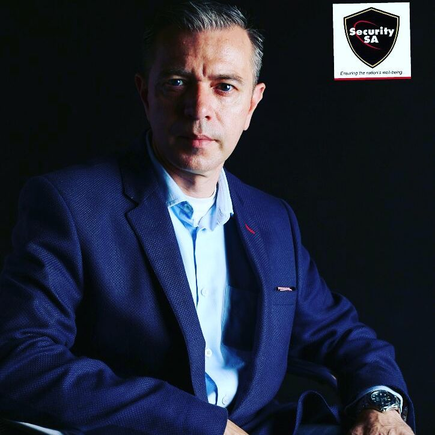
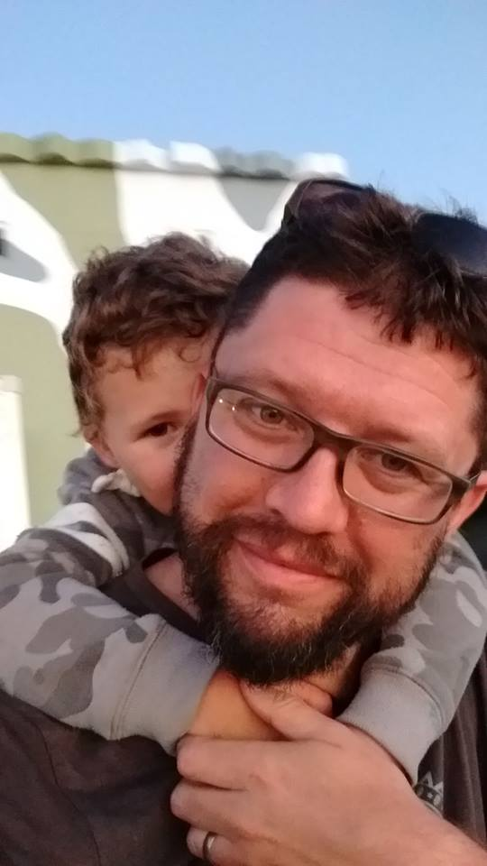

I am a Professional Geek
I work for Code Collective.
My current tech stack are JavaScript, Node.js, HTML5, CSS3, Git & TortoiseHg, Ionic3 & Cordova, Express.js, React.js, Handlebars, Asp.Net Web forms, DevOps, C#.NET
You can check out my two page skill info here.
It might be an outdated version 🙁 please feel free to contact me if you think I have a potential fit at your company.
Endorsements

He worked exactly as specified, communicated clearly and executed faster. He worked for my company for almost four years, and he chose to go continue his studies in Software Development. I would probably hire him again.
Ibrahim Parker - CEO at Security Systems
Christian sacrifice most of his time involving himself in the tech community, he mentors new students with the passion of learning together and collaborate with other pupils that attend Railsbridge
Steve Barnett - UX Frontend developer and software consultant.

Christian is an enthusiast full with the passion for computer programming, he strives to better himself to becoming a better software engineer. He is a hard worker and eager to learn new things. He dedicates his time to keep learning and asking questions
whenever he does not understand.
Andre Vermeulen- CTO at projectcodex.co
A young future developer, he is a talented young man with such a brilliant mind.He works hard toward his goals, he was first introduced to computer programming by me since 2015, and he showed the passion and the excitements of crafting the
coding skill.
De Wet Blomerus -Software engineer at SalesLoft